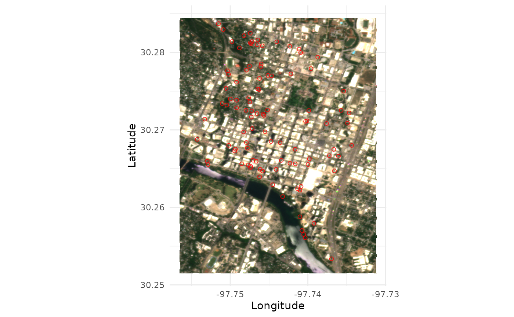

2 Customization and advanced usage
Yiluan Song
2026-02-09
Source:vignettes/customization.Rmd
customization.RmdWe understand that you may want to have more control over your workflow. Here are some examples of how you can use the functions in the package to customize your workflow.
Direct search and order for a single site
Similar to the batch downloading process, you first need to set the
parameters for your PlanetScope imagery search and order using the
set_planetscope_parameters() function.
setting <- set_planetscope_parameters(
api_key = set_api_key(),
item_name = "PSScene",
asset = "ortho_analytic_4b_sr",
product_bundle = "analytic_sr_udm2",
cloud_lim = 1,
harmonized = T
)If you would like to customize your batch downloading process, you
may use the functions search_planetscope_imagery() and
order_planetscope_imagery() to search and order images for
a single site and time period. Be careful not to order too many images
at once, as the Planet API has an internal limit. The
order_planetscope_imagery_batch() function is designed to
handle multiple sites and years in a more streamlined manner.
df_coordinates_NEON <- readr::read_csv(system.file("extdata", "NEON", "example_neon_coordinates.csv", package = "BatchPlanet"), show_col_types = FALSE)
# Set the bounding box for the site of interest
bbox <- set_bbox(df_coordinates_NEON, "SJER")
images <- search_planetscope_imagery(
api_key = setting$api_key,
bbox = bbox,
date_end = "2025-03-31",
date_start = "2025-03-01",
item_name = setting$item_name,
asset = setting$asset,
cloud_lim = setting$cloud_lim
)
order_id <- order_planetscope_imagery(
api_key = setting$api_key,
bbox = bbox,
items = images,
item_name = setting$item_name,
product_bundle = setting$product_bundle,
harmonized = setting$harmonized,
order_name = "SJER_2025_60_90"
)Direct download from a single order
If you would like to customize your batch downloading process, you
may use the function download_planetscope_imagery() to
download images from a single order. You can find the order ID saved in
the raw/ folder, or you can find it in the past orders in
your Planet account, if you did not use
order_planetscope_imagery_batch() to order images.
download_planetscope_imagery(
order_id = "dummy",
exportfolder = "dummy",
api_key = setting$api_key,
overwrite = F
)Visualize a single true color image
You can visualize the true color imagery of single images using the
visualize_true_color_imagery() function. You can overlay
the coordinates from the relevant site on the imagery (optional). You
can specify the brightness of the image using the
brightness parameter.
df_coordinates_urban <- readr::read_csv(system.file("extdata", "urban", "example_urban_coordinates.csv", package = "BatchPlanet"), show_col_types = FALSE)
set.seed(42)
df_coordinates_AT <- df_coordinates_urban |>
dplyr::filter(site == "AT") |>
dplyr::sample_n(100)
visualize_true_color_imagery(
file = system.file("extdata", "urban", "raw", "AT", "AT_2025_121_151", "20250521_174012_92_252e_3B_AnalyticMS_SR_harmonized_clip.tif", package = "BatchPlanet"),
df_coordinates = df_coordinates_AT,
brightness = 4
)
Direct retrieval of time series for a set of coordinates
For demonstration purpose, we are going to set the data directory to
a subfolder of the sample-data folder. You should set your
own directory when you carry out your analysis.
## Sample data successfully downloaded to /home/runner/work/BatchPlanet/BatchPlanet/vignettes/sample-data
dir_data <- "sample-data"
dir_data_NEON <- file.path(dir_data, "NEON")If you would like to customize your time series retrieval process,
you may use the function retrieve_planetscope_time_series()
for a single folder dir_site and a set of coordinates you
specify.
df_coordinates_example <- df_coordinates_NEON |> dplyr::filter(site == "SJER", group == "Quercus")
df_ts_example <- retrieve_planetscope_time_series(
dir_site = file.path(dir_data_NEON, "raw", "SJER"),
sf_coordinates = df_coordinates_example |> sf::st_as_sf(coords = c("lon", "lat"), crs = sf::st_crs(4326)),
num_cores = 10
)Clean time series data in a single data frame
To process a single set of time series in a data frame, you can use
the clean_planetscope_time_series() function.
df_ts_example <- read_data_product(dir = dir_data_NEON, v_site = "SJER", v_group = "Quercus", product_type = "ts")
df_clean_example <- clean_planetscope_time_series(df_ts = df_ts_example, calculate_index = "evi", filter_range = list(evi = c(0, 1)))Calculate start/end of season metrics from a single data frame
You can customize your own start/end of season metrics calculation,
not necessarily PlanetScope data or even EVI data, using the
calculate_season_metrics() function that takes a data frame
of time series data and a data frame of thresholds and returns a data
frame with the calculated start/end of season metrics.
df_clean_example <- read_data_product(dir = dir_data_NEON, v_site = "SJER", v_group = "Quercus", product_type = "clean")
df_thres <- set_thresholds(thres_up = c(0.3, 0.4, 0.5), thres_down = NULL)
df_doy_example <- calculate_season_metrics(df_index = df_clean_example, df_thres = df_thres, var_index = "evi", min_days = 20, check_seasonality = F)## Registered S3 method overwritten by 'quantmod':
## method from
## as.zoo.data.frame zoo